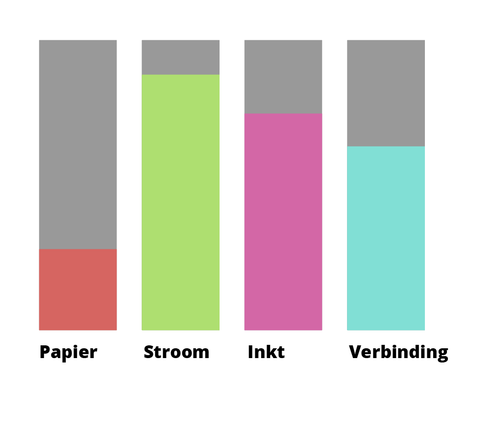
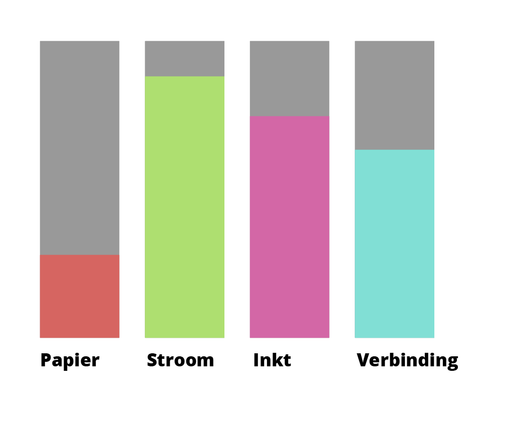

Voor deze opdracht moet ik een Homestasis model gebruiken om uit te leggen wat de noden van apparaten zijn. In dit geval heb ik gekozen voor een printer.
Opdracht: Homeostasis model - printer
De behoeftes die een printer heeft om zijn primaire taak uit te kunnen voeren (scales):
- Inkt
- Papier
- Stroom
- Verbinding
Acties en externe stimuli die deze schalen kunnen beïnvloeden zijn het tekort aan papier, tekort aan inkt of het ontbreken van stroom. Zonder stroom kan de printer niet functioneren. Verder heeft de printer verbinding met computers nodig om taken te kunnen krijgen om aan de slag te gaan. Maar als de printer aan de slag wil gaan en er geen inkt of papier is, dan slaagt de printactie niet.
De printer voelt zich gelukkig als hij verbinding met computers heeft, omdat hij dan taken krijgt die hij kan uitvoeren. Op deze manier kan hij zich nuttig maken en niet alleen stof opvangen. Als hij geen stroomtoevoer krijgt is hij uit en heeft hij geen weet van taken die hij toegestuurd krijgt van de computers. In zijn gelukkige bui wanneer hij taken krijgt en lekker print is hij "over the moon". Maar het ligt anders als hij een taak krijgt en het printpapier vastzit in de lade. Hij wil dan dat iemand het papier rechttrekt. Verder is hij gefrustreerd als hij papier, stroom en taken om te doen heeft, maar geen inkt heeft om deze taken uit te voeren.
Hij wil dan graag nieuwe cardridges hebben zodat hij zijn taken uit kan voeren. Als hij inkt, stroom, papier en verbinding met computers heeft is de printer het gelukkigst.
Onderzoek
De NYC Center for Data Science. In data science zoeken ze manieren om data te integreren in computers die denken als mensen. Ik vind dit interessant omdat ze in verschillende velden proberen data science toe te passen. Het is positief voor onze maatschappij is data met elkaar wordt vergeleken en daaruit conclusies worden getrokken waardoor de maatschappij vooruit kan. Bekijk het hier. Ik vind het persoonlijk mooi als er positieve dingen worden gedaan met devices en data.
Reflectie
Dit onderwerp lag mij iets minder. Ik vond het moeilijk om out of the box te denken en een printer te zien als een creature en dus als een levend ding. Aan de andere kant vond ik het wel een leuke uitdaging. Ik had zelf verwacht dat artificial creatures zou gaan over interactievere devices met interessante sensoren. In de toekomst kan dit zeker meer gebruikt worden. Het waardevolste aan dit topic is denk ik het bekijken wat de noden voor een device zijn.